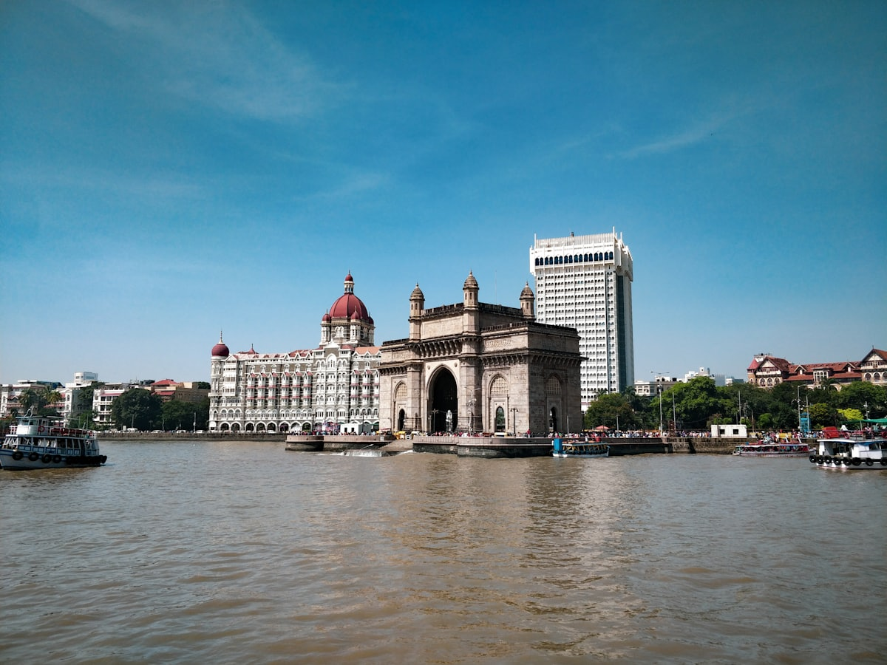

Mumbai City Tour
Mumbai's classics, walked with someone who grew up here

Start at the water. The Gateway of India went up in basalt and was finished in 1924; ferries still nose in and out beneath the arch, and the square in front fills with pigeons, photographers and school groups by mid-morning. Pooja grew up in this city, and she starts here because this is where Mumbai has greeted arrivals for about a century — by sea then, by taxi now.
From there the route strings together the places every visitor asks about. At Chhatrapati Shivaji Maharaj Terminus — Victorian Gothic, a working railway station, on the UNESCO World Heritage list since 2004 — you watch commuters stream through a building that looks like a cathedral. Crawford Market, officially Mahatma Jyotiba Phule Mandai, still trades fruit and spices under its old clocktower; Pooja knows which stalls to stop at and what is in season.
Then the contrast. At Mahalaxmi you look down over Dhobi Ghat, the open-air laundry that has washed the city's linen for more than a century — rows of washing pens, laundry strung out in the sun, and a system behind it all that Pooja will explain. Up on Malabar Hill, the Hanging Gardens give you terraced lawns, hedges clipped into animals, and a long view back over the city. You finish on Marine Drive, the curve of sea-front locals call the Queen's Necklace for the way its streetlights string out after dark.
The core loop takes about half a day. If you would rather go slower — a proper lunch stop, more time in the market lanes — ask about the full-day version when you message. It is your tour: just you and your party, and the order can flex around the heat and the traffic.
The day, stop by stop
- Gateway of IndiaStart beneath the basalt arch on the harbour, finished in 1924, with the ferries coming and going.
- Chhatrapati Shivaji Maharaj TerminusA Victorian Gothic railway station, UNESCO World Heritage since 2004 — and still a working one, so you see it in use.
- Crawford MarketOfficially Mahatma Jyotiba Phule Mandai: fruit, spices and the old clocktower building, with Pooja steering you to the right stalls.
- Dhobi Ghat, MahalaxmiLook out over the vast open-air laundry that has been working for more than a century.
- Hanging Gardens, Malabar HillTerraced gardens with hedge animals and a wide view over the city.
- Marine DriveEnd on the sweep of sea-front locals call the Queen's Necklace.
Included
- Pooja as your private guide from start to finish
- A route and pace planned around your party
- Hotel pickup and drop-off (details confirmed on WhatsApp)
Not included
- Entry tickets where charged
- Meals and drinks
- Car with driver, where the route needs one (can be arranged — ask when booking)
What to bring
- Comfortable walking shoes
- A hat and sunscreen — much of the route is in the open
- A bottle of water
- Some cash if you want to shop at Crawford Market
Good to know
- Private by default — just Pooja and your party
- Timings are flexible; earlier starts beat the heat and the traffic
- The stops are spread across South Mumbai, so a car with driver is the comfortable way to do it
- Crawford Market is closed on Sundays — on a Sunday tour Pooja swaps in another stop
- CST is a working station; expect crowds around rush hour
- Dhobi Ghat is viewed from the overlook at Mahalaxmi
Fancy this one?
Message Pooja with your dates — she'll answer questions before you commit to anything.
Enquire on WhatsApp